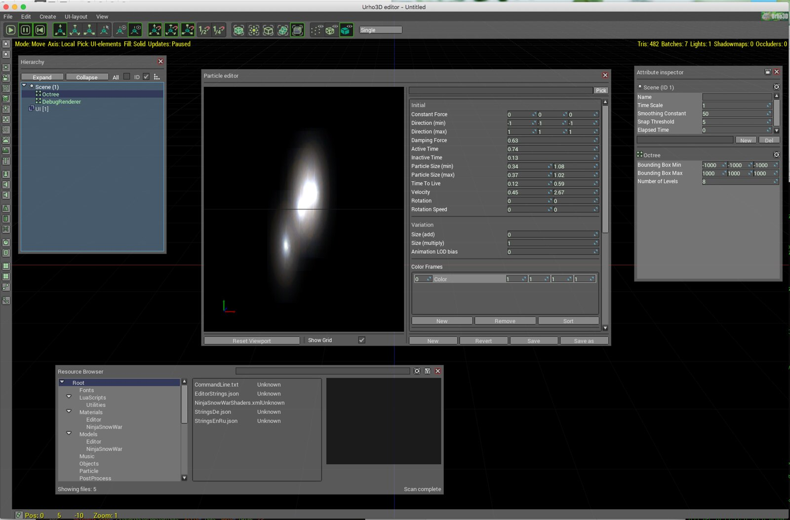
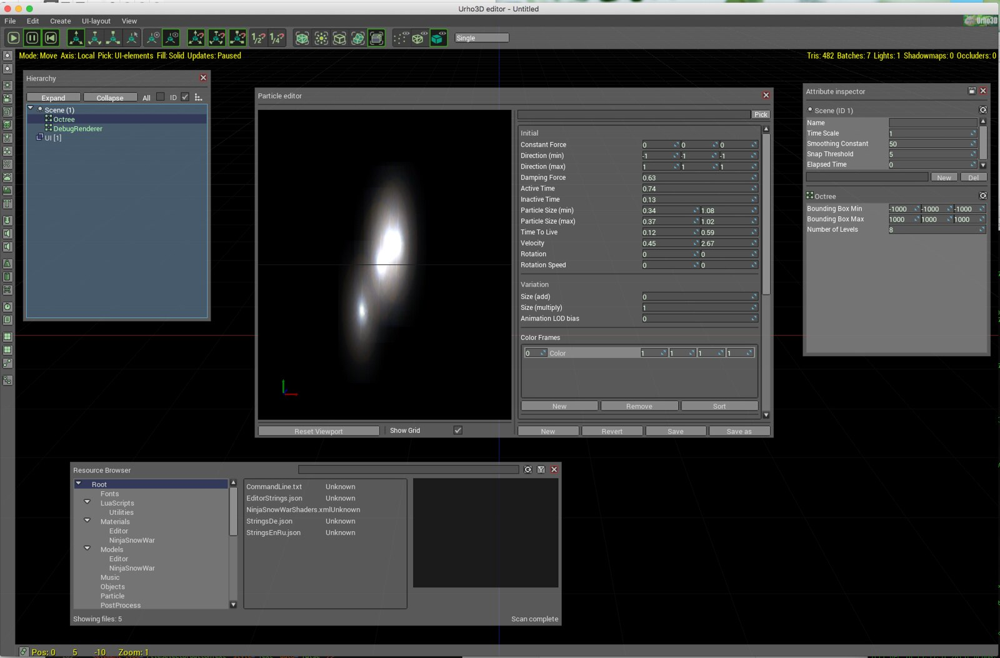

billyquith
Hi, I made some tweaks to the UI, screenshot below. I tweaked the fonts and a few colours.
Any feedback?
 Urho UI tweaks by Jap Whodaman , on Flickr

Hi, I made some tweaks to the UI, screenshot below. I tweaked the fonts and a few colours.
Any feedback?
 Urho UI tweaks by Jap Whodaman , on Flickr

tiny and compact fonts is nice!)
Thanks, yes, I don’t like the “Anonymous Pro” font as a general font, I think it is monospace, more of a programming font. This font is called Roboto. I tried a few and think this worked the best.

This is much better than what we have currently.
Ideally, several UI themes could be selectable for the editor (dark theme, light theme, ?).

The font support other languages than English?
p.s. Personally I do not like the plain gray-colored themes. They make me sad

[quote=“1vanK”]The font support other languages than English?
p.s. Personally I do not like the plain gray-colored themes. They make me sad
[/quote]
Good point. Will check localisation.
Grey is neutral though. And it has to work with full scene behind it. It is influenced by Blender.
Earlier UrhoEditor was gray theme
Grey was the colour, but themes can look different. The earlier looked a bit like Motif.
The main thing I thought looked bad in the current one is the font. There look to be a couple of sizing issues that need tidying up as well (see collapse button).
Can you give examples of UI themes you like? As I said, I quite like Blender. I like the neutral look of it. I mainly use dark themes for code editing, easier on the eye. Of course there could be multiple themes. I’ve tried to reuse the current layout XML for this one.
I like the blue theme for this forum and Win7

I also got to tweak Urho’s UI but this was a couple of years ago…